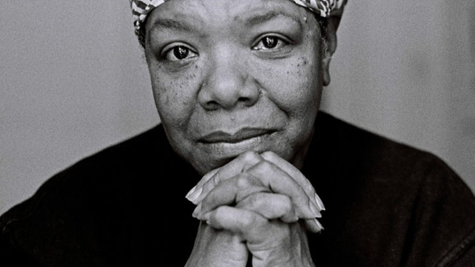

Ainda me levanto (Maya Angelou)

Podes inscrever-me na História
Em mentiras amargas e retorcidas.
Podes espezinhar-me no chão sujo
Mas ainda assim, como a poeira, vou-me levantar.
Minha impertinência incomoda?
Por que ficas soturno
Ao me ver andar como se tivesse em casa
Poços de petróleo jorrando?
Como as luas e como os sóis,
Como a constância das marés,
Como a esperança alçando voo,
Assim me levanto.
Querias ver-me alquebrada?
Cabeça pensa e olhos baixos?
Ombros caídos como lágrimas,
Enfraquecida de tanto pranto?
Minha altivez o ofende?
Não leve tão a peito assim:
Eu rio como quem minera ouro
Em seu próprio quintal
Podes fuzilar-me com palavras
Podes lanhar-me com os olhos
Podes matar-me com malevolência
Mas ainda assim, como o ar, eu me levanto
Minha sensualidade perturba?
Por acaso te surpreende
Que eu dance como quem tem diamantes
Ali onde as coxas se encontram?
Do fundo das cabanas da humilhação
Me levanto
Do fundo de um pretérito enraizado na dor
Me levanto
Sou um oceano negro, marulhando e infinito,
Sou maré em preamar
Para além de atrozes noites de terror
Me levanto
Rumo a uma aurora deslumbrante
Me levanto
Trazendo as oferendas de meus ancestrais
Portando o sonho e a esperança do escravo
Ainda me levanto
Me levanto
Me levanto
(Tradução: Walnice Nogueira Galvão)